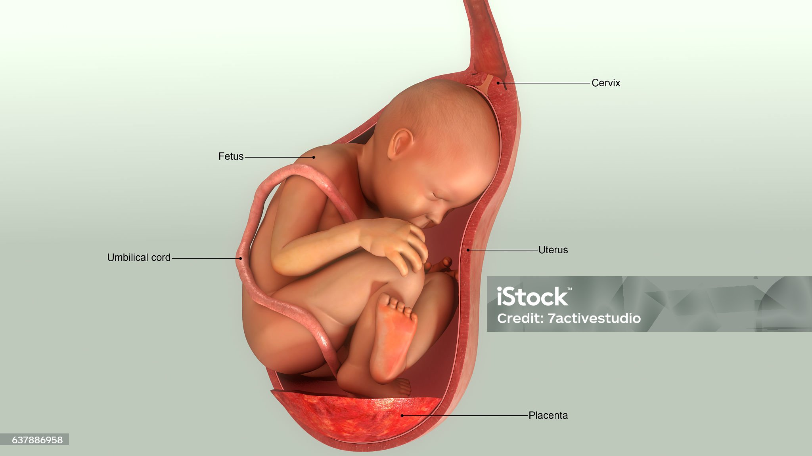
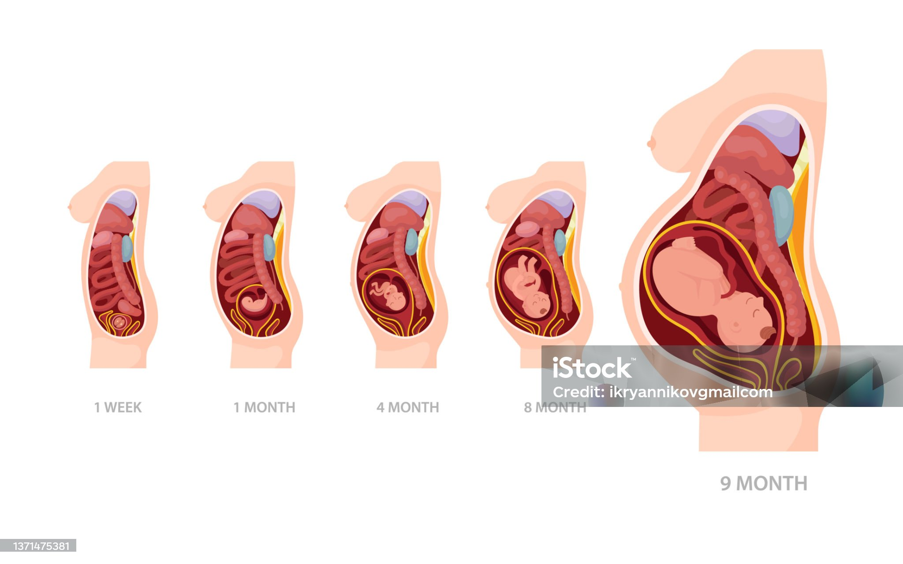
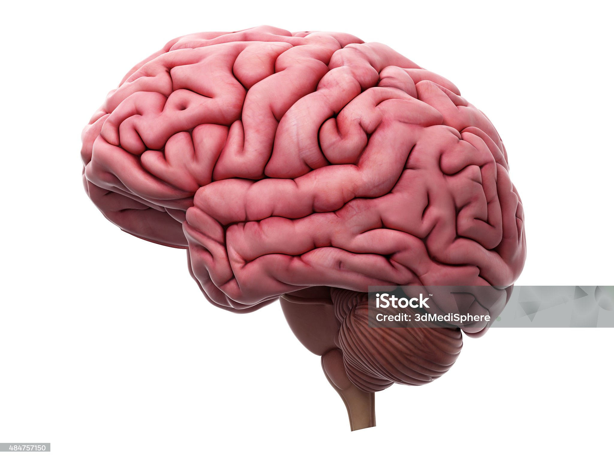

Explore the Architecture of Human Body
Intro
Anatomy is the science that examines the normal structure of our body, our organs, the location of these organs, and the relationship between them. The emergence of anatomy was provided by important people such as Hippocrates in ancient times. Anatomy; Ana: to remove and separate, Tomi: is a word derived from the roots meaning to cut. There are other types of anatomy that deal with animals and plants. Artists were also interested in human and animal anatomy, and they benefited from this knowledge while creating their drawings. Anatomy can take various names according to the way it handles body structures.
Pregnancy Anatomy
Pregnancy is a remarkable journey involving various systems in the female body. During this time, the uterus expands, hormonal changes occur, and organs shift to accommodate fetal development.

Growth Month-by-Month
For a detailed explanation, click below:
-
First trimester
Month 1
- 2 weeks: Fertilization: At the start of this week, woman ovulates. Egg is fertilized 12 to 24 hours later if a sperm penetrates it. Over the next several days, the fertilized egg (called a zygote) will start dividing into multiple cells as it travels down the fallopian tube, enters the uterus, and starts to burrow into the uterine lining.
- 3 weeks: Implantation: Now nestled in the nutrient-rich lining of the uterus is a microscopic ball of hundreds of rapidly multiplying cells that will develop into your baby. This ball of cells, called a blastocyst, has begun to produce the pregnancy hormone hCG, which tells the ovaries to stop releasing eggs.
- 4 weeks: Your ball of cells is now officially an embryo. You're now about 4 weeks from the beginning of your last period. It's around this time – when your next period would normally be due – that you might be able to get a positive result on a home pregnancy test. Your baby is the size of a poppy seed.
Month 2
- 5 weeks: Your baby resembles a tadpole more than a human, but is growing fast. The circulatory system is beginning to form, and cells in the tiny "heart" will start to flicker this week. Your baby is the size of a sesame seed.
- 6 weeks: Your baby's nose, mouth and ears are starting to take shape, and their intestines and brain are beginning to develop. Your baby is the size of a lentil.
- 7 weeks: Your baby has doubled in size since last week, but still has a tail, which will soon disappear. Little hands and feet that look more like paddles are emerging from the developing arms and legs. Your baby is the size of a blueberry.
- 8 weeks: Your baby has started moving around, though you won't feel your baby move yet. Nerve cells are branching out, forming primitive neural pathways. Breathing tubes now extend from their throat to their developing lungs.Your baby is the size of a raspberry.
Month 3
- 9 weeks: Your baby's basic anatomy is developing (they even have tiny earlobes now), but there's much more to come. Their embryonic tail has disappeared and they weigh just a fraction of an ounce but are about to start gaining weight fast. Your baby is the size of a grape.
- 10 weeks: Your embryo has completed the most critical portion of development. Their skin is still translucent, but their tiny limbs can bend and fine details like nails are starting to form. Your baby is the size of a strawberry.
- 11 weeks: Your baby is almost fully formed. They're kicking, stretching, and even hiccupping as their diaphragm develops, although you can't feel any activity yet. Your baby is the size of a fig.
- 12 weeks: This week your baby's reflexes kick in: Their fingers will soon begin to open and close, toes will curl, and their mouth will make sucking movements. Your baby is the size of a lime.
-
Second Trimester
Month 4
- 13 weeks: Your baby's tiny fingers now have fingerprints, and their veins and organs are clearly visible through their skin. If you're having a girl, her ovaries contain more than 2 million eggs. Your baby is the size of a plum.
- 14 weeks: Your baby's brain impulses have begun to fire and they're using their facial muscles. Their kidneys are working now, too. If you have an ultrasound, you may even see them sucking their thumb. Your baby is the size of a lemon.
- 15 weeks: Your baby's eyelids are still fused shut, but they can sense light. If you shine a flashlight on your tummy, they'll move away from the beam. Ultrasounds done this week may reveal your baby's sex. Your baby is the size of an apple.
- 16 weeks: The patterning on your baby's scalp has begun, though their hair isn't visible yet. Their legs are more developed, their head is more upright, and their ears are close to their final position. Your baby is the size of an avocado.
- 17 weeks: Your baby can move their joints, and their skeleton – formerly soft cartilage – is now hardening to bone. The umbilical cord is growing stronger and thicker. Your baby is the size of a turnip.
Month 5
- 18 weeks: Your baby is flexing their arms and legs, and you may be able to feel those movements. Internally, a protective coating of myelin is forming around their nerves. Your baby is the size of a bell pepper.
- 19 weeks: Your baby's senses – smell, vision, touch, taste and hearing – are developing and they may be able to hear your voice. Talk, sing or read out loud to them, if you feel like it. Your baby is the size of a pomegranate.
- 20 weeks: Your baby can swallow now and their digestive system is producing meconium, the dark, sticky goo that they'll pass in their first poop – either in their diaper or in the womb during delivery. Your baby is the size of a banana.
- 21 weeks: Your baby's movements have gone from flutters to full-on kicks and jabs against the walls of your womb. You may start to notice patterns as you become more familiar with their activity. Your baby is the size of a mango.
- 22 weeks: Your baby now looks almost like a miniature newborn. Features such as lips and eyebrows are more distinct, but the pigment that will color their eyes isn't present yet. Your baby is the size of a sweet potato.
Month 6
- 23 weeks: Your baby's ears are getting better at picking up sounds. After birth, they may recognize some noises outside the womb that they're hearing inside now. Your baby is the size of a grapefruit.
- 24 weeks: Your baby cuts a pretty long and lean figure, but chubbier times are coming. Their skin is still thin and translucent, but that will begin to change soon too. Your baby is the size of an ear of corn.
- 25 weeks: Your baby's wrinkled skin is starting to fill out with baby fat, making them look more like a newborn. Their hair is beginning to come in, and it has color and texture. Your baby is now the same weight as an acorn squash.
- 26 weeks: Your baby is now inhaling and exhaling amniotic fluid, which helps develop their lungs. These breathing movements are good practice for that first breath of air at birth. Your baby is the size of a spaghetti squash.
- 27 weeks: Your baby now sleeps and wakes on a regular schedule, and their brain is very active. Their lungs aren't fully formed, but they could function outside the womb with medical help. Your baby is the size of a head of cauliflower.
-
Third trimester
Month 7
- 28 weeks: Your baby's eyesight is developing, which may enable them to sense light filtering in from the outside. They can blink, and their eyelashes have grown in. Your baby is the size of a large eggplant.
- 29 weeks: Your baby's muscles and lungs are busy getting ready to function in the outside world, and their head is growing to make room for their developing brain. Your baby is the size of a butternut squash.
- 30 weeks: Your baby is surrounded by a pint and a half of amniotic fluid, although there will be less of it mas they grow and claim more space inside your uterus. Your baby is the size of a large cabbage.
- 31 weeks: Your baby can now turn their head from side to side. A protective layer of fat is accumulating under their skin, filling out their arms and legs. Your baby is the size of a coconut.
Month 8
- 32 weeks: You're probably gaining about a pound a week now. Half of that goes straight to your baby, who will gain one-third to half their birth weight in the next seven weeks in preparation for life outside the womb. Your baby is the size of a papaya.
- 33 weeks: The bones in your baby's skull aren't fused yet. That allows them to shift as their head squeezes through the birth canal. They won't fully fuse until adulthood. Your baby is the size of a pineapple.
- 34 weeks: Your baby's central nervous system is maturing, as are their lungs. Babies born between 34 and 37 weeks who have no other health problems usually do well in the long run. Your baby is the size of a cantaloupe.
- 35 weeks: It's getting snug inside your womb – but you should still feel your baby moving as much as ever. Your baby's kidneys are fully developed, and their liver can process some waste products. Your baby is the size of a honeydew melon.
Month 9
- 36 weeks: Your baby is gaining about an ounce a day. They're also losing most of their lanugo hair that covered their body, along with the vernix caseosa, a waxy substance that was protecting their skin until now. Your baby is the size of a head of romaine lettuce.
- 37 weeks: Your due date is very close, and though your baby looks like a newborn, they're not considered full-term until 39 weeks. Over the next two weeks, their lungs and brain will continue to mature. Your baby is the size of a bunch of Swiss chard.
- 38 weeks: Their eyes could change color up until they're about a year old. Your baby is the size of a mini watermelon.
- 39 weeks: Your baby's physical development is complete, but they're still busy putting on fat and growing bigger. Your baby is the size of a pumpkin.
Month 10
- 40 weeks: It’s your due date week. Sometimes women ovulate later than expected. Your provider will continuously assess your pregnancy to make sure you can safely continue your pregnancy. Your baby is the size of a watermelon.
- 41 weeks: Your baby is now considered late-term. Going more than two weeks past your due date can put you and your baby at risk for complications

Brain Anatomy
The human brain controls all functions of the body and interprets information from the outside world.

It consists of:
-
Cerebrum
The cerebrum is the largest and most recognizable part of the brain. It consists of grey matter (the cerebral cortex) and white matter at the center. The cerebrum is divided into two hemispheres, the left and right, and contains the lobes of the brain (frontal, temporal, parietal, and occipital lobes). It is responsible for higher functioning roles such as thinking, learning, memory, language, emotion, movement, and perception.
-
Cerebellum
The cerebellum is located under the cerebrum and monitors and regulates motor behaviors, especially automatic movements. It is also important for regulating posture and balance and may be involved in learning and attention. Although it accounts for roughly 10% of the brain’s total weight, it may contain more neurons than the rest of the brain combined.
-
Brainstem
The brainstem is located at the base of the brain and connects the cerebrum and the cerebellum to the spinal cord. It acts as a relay station and regulates automatic functions such as sleep cycles, breathing, body temperature, digestion, coughing, and sneezing.